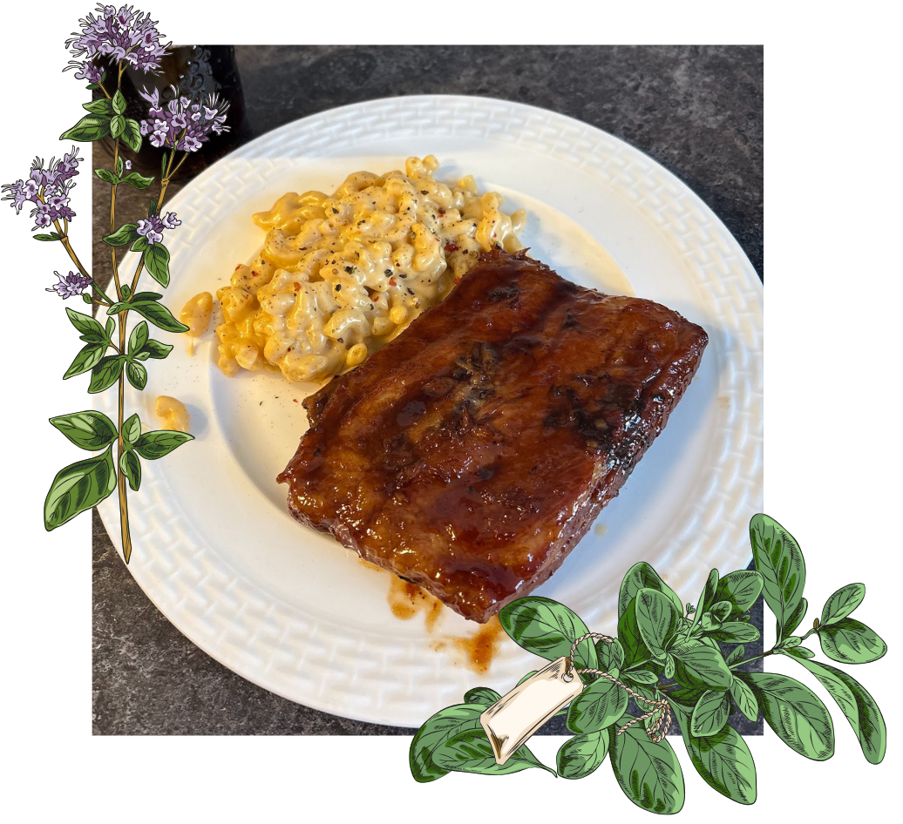

B
Broccoli Feta Soup
Ingredients
- 1 liter of chicken or vegetable broth or 4 cups of homemade broth
- 2 Heads of broccoli (or one bag of frozen broccoli)
- 3-4 Big garlic cloves
- 2 sticks of celery (around 150 grams)
- 125 grams of feta
- 1 tablespoon of oil
- 1 tablespoon of butter
- Salt and pepper to taste
Steps
- On medium heat, add the oil and butter.
- Roughly chop up your onions, garlic and celery. Cook until the onions are translucent and smells fragrant. Add Brocoli, cook for a minute or 2.
- Cover the veggies in the broth, bring to a boil, then let simmer for 30 minutes, or until the broccoli is fully cooked.
- In the last 5 minutes, add your feta salt and pepper.
- Blend and enjoy!

R
Kalbi Ribs
Ingredients
- 1 Rack of Ribs
- ½ a Jar of Premade Kalbi sauce
- 3 inch of Fresh Ginger
- 4 or 5 cloves of Fresh Garlic
- Green onions to your taste
- 1 White Onion
- 4 Celery Stalk
- 2 Tablespoons of Soy sauce
- 1 Tablespoon of Chili Garlic Paste
Steps
- Roughly cut your Green and White Onions, Celery, garlic and Ginger.
- Add your vegetables, Kalbi sauce, Soy Sauce, Garlic Chili paste to a large bag.
- Remove the membrane on your ribs and place ribs in the bag with the marinade.
- Let it marinade for a minimum of 4 hours or up to 24 hours.
- Preheat your oven to 250F.
- Place your ribs with the vegetables and sauce on a baking sheet lined with foil.
- Cook for 3 to 4 hours, and flip the ribs every 30 minutes.
- Broil the ribs for about 2 to 3 minutes uncovered.
- Enjoy!

S
Sourdough Loaf
Ingredients
- 125grams starter
- 325grams water
- 500 grams of flour or bread flour
- 10 grams of salt
- Rice flour (optional, regular flour might burn while cooking the loaf, rice flour wont.)
- The next day mix the starter, water, salt, flour into a bowl until fully combined. Then let the dough rest for an hour.
- Do 4 sets of stretches and folds, 30 minutes apart.
- Shape your loaf on a floured surface (If you want to add any inclusions like cheese or garlic add them now). Let it rest for 15 minutes on the counter.
- Place into banneton. Cover it and place in fridge overnight or up to 3 days
- Preheat the oven to 450F.
- Score bread and place it on a parchment paper in your dutch oven.
- Cook for 40 minutes covered, then last 10-15 minutes uncovered or until golden brown.
- Let it cool for at least an hour or two before cutting.
- Enjoy!
Steps